Oeuvres
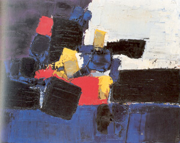
- Les Footballeurs
- 1952
- Huile sur toile
- 65 x 81 cm
- Courtesy Galerie Daniel Malingue
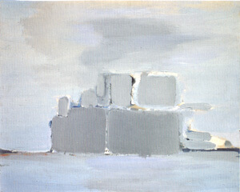
- Bateau de guerre
- 1955
- Huile sur toile
- 65 x 81 cm
- Collection particulière, Lausane
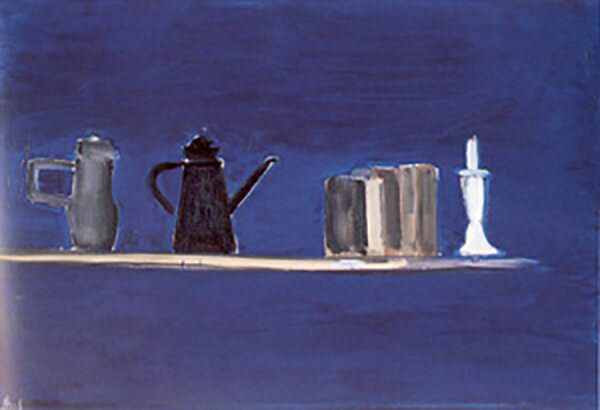
- Nature morte au chandelier sur fond bleu
- 1955
- Huile sur toile
- 89 x 130 cm
- Musée Picasso, Antibes
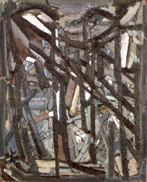
- Ressentiment
- 1947
- Huile sur toile
- 100 x 81 cm
- Galerie Jeanne Bucher
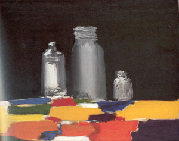
- Nature morte aux bocaux
- 1955
- Huile sur toile
- 65 x 81 cm
- Collection particulière
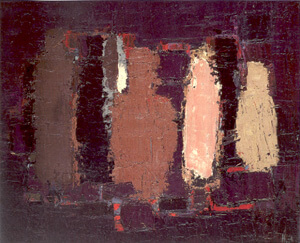
- Bouteilles
- 1952
- Huile sur toile
- 65 x 81 cm
- Collection particulière
- Courtesy Massimo Martino SA, Lugano
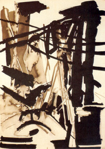
- Composition
- 1947
- Encre de chine
- 105 x 76 cm
- Collection particulière
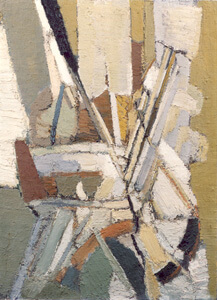
- Jour de fête
- 1949
- Huile sur toile
- 100 x 73 cm
- Galerie Jeanne Bucher
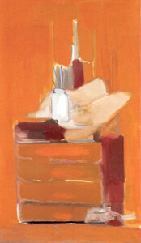
- Atelier
- 1955
- Huile sur toile
- 195 x 114 cm
- Galerie Jeanne Bucher
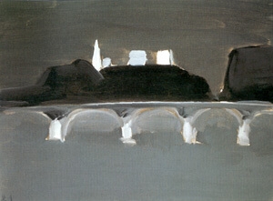
- Paris la nuit
- 1954
- Huile sur toile
- 45 x 60 cm
- Collection particulière, Suisse
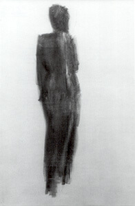
- Etudes de nu
- 1955
- Fusain sur papier
- 150 x 100 cm
- Fondation Marguerite et Aimé Maeght, Saint-Paul
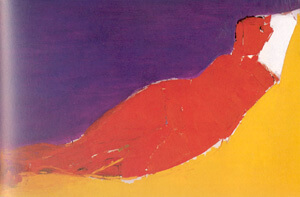
- Grand nu orange
- 1953
- Huile sur toile
- 89 x 146 cm
- Collection particulière
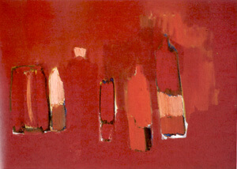
- Bouteilles rouges
- 1955
- Huile sur toile
- 73 x 100 cm
- Collection particulière, Suisse
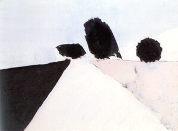
- La route
- 1954
- Huile sur toile
- 60 x 81 cm
- Collection particulière
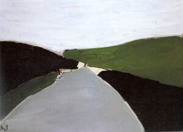
- La route d'Uzès
- 1954
- Huile sur toile
- 60 x 81 cm
- Collection particulière
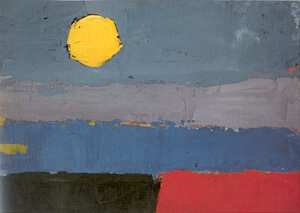
- Paysage
- 1952
- Huile sur carton
- 33 x 46 cm
- Collection particulière
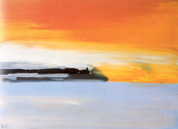
- Chemin de fer au bord de la mer, soleil couchant
- 1955
- Huile sur toile
- 73 x 100 cm
- Courtesy Galerie Daniel Malingue
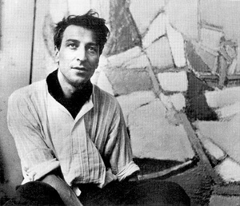
- Nicolas de Stael dans son atelier
- 1949
- rue Gauguet, Paris